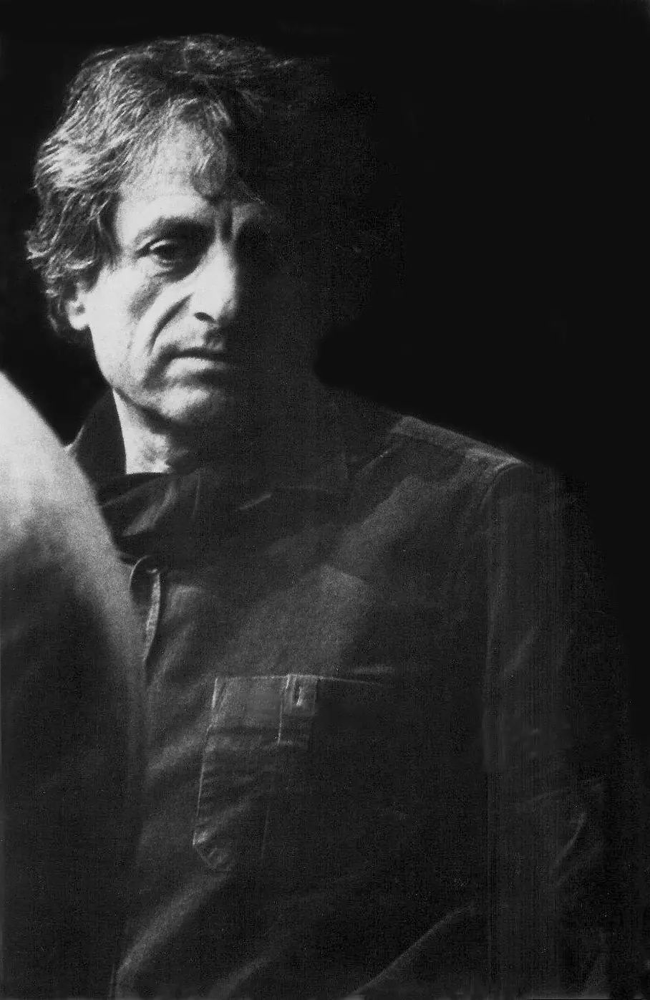
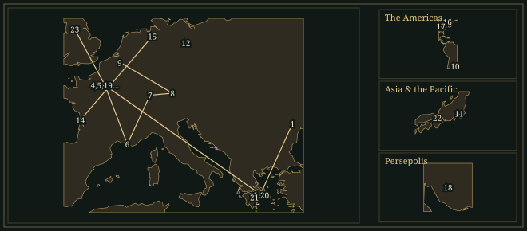
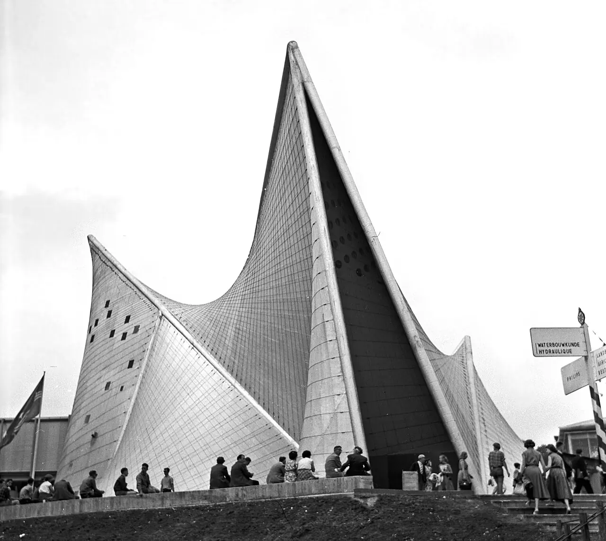
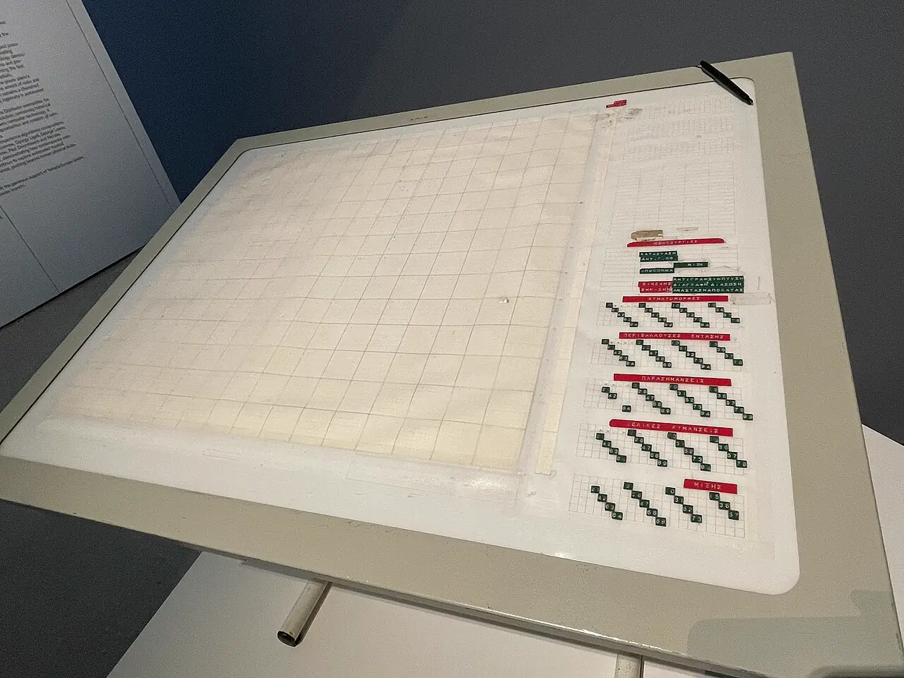

IannisXenakis
Greek composer, born in Romania and naturalised French in 1965, who trained as an engineer, worked for Le Corbusier in Paris and composed with probability theory, set theory and computers.
- Trained
- Civil engineering, Athens Polytechnic · harmony and counterpoint with Aristotle Koundourov · attended Messiaen’s Conservatoire class from 1951
- Posts
- Engineer and architect in Le Corbusier’s studio, 1947–59 · Indiana University, Bloomington, 1967–72 · Université de Paris I from 1972
- Turning points
- Metastaseis 1954 · Pithoprakta 1956 · Philips Pavilion 1958 · Polytope de Cluny 1972 · UPIC 1977
- Output
- Orchestral, choral, chamber and percussion works · tape and computer music · polytopes · buildings and urban projects
“The laws of the calculus of probabilities entered composition through musical necessity.”
Life
In 1951 Iannis Xenakis, an engineer in Le Corbusier’s Paris studio, took some of his scores to Olivier Messiaen. Nadia Boulanger had declined to teach him and had sent him to Annette Dieudonné, a harmony teacher at the Conservatoire, who recommended Messiaen. Messiaen no longer gave private lessons but let him sit in on his class. According to Nouritza Matossian’s biography, he told Xenakis that he was Greek, an architect and trained in advanced mathematics: “Take advantage of these things. Do them in your music.”
1922–47Brăila, Athens and Paris
Xenakis was born in Brăila, Romania, to Greek parents, and was sent in 1932 to a Greek–English school on Spetses. In Athens he studied harmony and counterpoint with Aristotle Koundourov while preparing for the Polytechnic, which closed on the first day of term in October 1940 when Italian troops invaded Greece. He joined the Resistance in 1941. In December 1944 he commanded a company of student fighters against British forces; he told François Delalande that the city had become a “fantastic polytope both of sound, and of light”. A shell on 1 January 1945 broke his jaw and cost him the sight of his left eye. Sentenced to death in 1947, he left Greece on a false passport and reached France in November.
1947–59Le Corbusier’s studio
On the recommendation of the architect Georges Candilis, Xenakis joined Le Corbusier’s atelier in December 1947, where his first work was computing the concrete elements of the Marseille housing unit. From 1954 he was the main collaborator on the convent of La Tourette. “The general shape is Le Corbusier’s, while the internal structure was developed by me,” he told Bálint András Varga. For La Tourette Xenakis designed window panes of unequal lengths, which Le Corbusier called “musical glass panes”. In music, Arthur Honegger objected to parallel octaves in a piano piece by Xenakis. Xenakis replied that he liked them and stopped attending Honegger’s class.
1953–59Metastaseis and the Philips Pavilion
Metastaseis, finished at the end of 1954, was the third piece of the triptych Anastenaria. On 6 July of that year Messiaen wrote to Pierre Schaeffer recommending his “student and friend” as “very extraordinarily gifted for music and rhythm”. The conductor Hermann Scherchen read the scores in his hotel and told Xenakis, as Xenakis reported: “you don’t approach music as a musician. You look at it from a different point of view, from the outside.” Hans Rosbaud conducted the first performance at Donaueschingen on 16 October 1955. Xenakis recalled that the critic Antoine Goléa dismissed it as a piece crammed with glissandi.
In 1956 Philips asked Le Corbusier to design a pavilion for the Brussels World’s Fair of 1958. Le Corbusier was more interested in the show inside. He gave Xenakis a rough stomach-shaped plan, and Xenakis covered it with thin concrete shells in the form of hyperbolic paraboloids and conoids, which are self-supporting surfaces made of straight lines. Edgard Varèse composed the Poème électronique, which was played inside, and Xenakis wrote a short interlude, Concret PH. “In the Philips pavilion I realized the basic ideas of Metastasis,” he told Varga.
Le Corbusier at first declined to credit Xenakis, who wrote to Philips in 1957 asking to be named beside him; the pavilion was finally credited to both. Le Corbusier’s answer, as Xenakis told Varga: “What do you think you invented? All these shapes are well known!” In the summer of 1959 he dismissed Xenakis and two colleagues, Augusto Tobito and André Maisonnier.
1955–63Probability and computers
In July 1955 Xenakis published “La crise de la musique sérielle” in Scherchen’s Gravesaner Blätter. In it he argued that the series and the polyphony built on it were inadequate, and that what would count was the statistical average of the sounds present at a given moment. Pithoprakta (1955–56), for forty-six divided strings, two trombones and a percussionist, was first played in Munich on 8 March 1957 under Scherchen. Achorripsis (1956–57), for twenty-one instruments, took nearly two years to write because he calculated its structure from Poisson’s law without a computer. The serialists and most critics attacked its Paris performance in 1959. From 1955 to 1962 he worked in Pierre Schaeffer’s Groupe de recherches de musique concrète, and the première of his tape piece Bohor in December 1962 ended their relations.
In 1962 he used an IBM 7090 to calculate the ST pieces. Herma, for piano, was given at the Domaine Musical on 24 April 1963. Boulez had written to Suzanne Tézenas on 16 April that he expected it to be boring, and the pianist Georges Pludermacher had to repeat all of it as an encore.
1963–72Tanglewood, Berlin and Bloomington
In 1963 Aaron Copland telephoned to ask whether Xenakis would teach at Tanglewood. Xenakis, a political refugee, obtained permission to travel, taught there that summer and began Eonta. Copland conducted Pithoprakta in San Francisco in 1966 and wrote an endorsement for the jacket of Formalized Music (1971) that calls Xenakis “the possessor of a special and original method of composition”. From autumn 1963 to spring 1964 Xenakis lived in West Berlin on a Ford Foundation grant, wrote Eonta and worked out sieve theory and the distinction between structures outside time and in time. The Domaine Musical gave Eonta its first performance in Paris on 16 December 1964; Pierre Boulez, who conducted, divided the five brass parts among ten players.
Terretektorh (Royan, 1966) seats eighty-eight players among the audience, and Nomos Alpha (Bremen, 1966), for solo cello, orders its sections by the rotations of a cube. From 1967 to 1972 Xenakis taught at Indiana University. He accepted its offer on condition that he could found a centre for mathematical and automated music, and he said later that the music department wished to have little to do with new music.
1967–78Polytopes and the UPIC
Xenakis called his spectacles of sound, light and architecture polytopes, from the Greek meaning ‘many places’. The first, in the French pavilion at the Montreal World’s Fair of 1967, used 1,200 flashes hung on cables. The Polytope de Cluny, in the Roman baths in Paris from October 1972 to January 1974, used 600 flashes and lasers reflected by 400 mirrors under computer control; nearly 100,000 tickets were sold. The Polytope de Mycenae, on the ancient site from 2 to 5 September 1978, was his first creation in Greece after the amnesty of 1974 ended his exile.
His Paris research group, founded in 1966 as the EMAMu and renamed the CEMAMu in 1972, completed the first full UPIC, a drawing tablet connected to a computer, in 1977. Xenakis began to explore it with Mycènes Alpha (1978), made for the Mycenae polytope and his first work made entirely of computer-generated sound.
1976–2001Later years
Xenakis defended his doctoral thesis, Arts/Sciences: Alliages, at the University of Paris I on 18 May 1976 before a jury that included Messiaen. Jonchaies, for 109 players, was first played in Paris on 21 December 1977; its scale of intervals between a minor second and a major third repeats after an octave and a fourth. He received the Kyoto Prize in 1997. His last work, O-Mega, was first played at Huddersfield on 30 November 1997 by Evelyn Glennie and the London Sinfonietta. Illness stopped him composing in 1998, and he died at home in Paris on 4 February 2001.
Where to hear it
- Metastaseis (original version)1953–54Orchestra Sinfonica Nazionale della RAI, Turin; Arturo Tamayo · Mode Records, mode 299 · Live, 2008
The first recording of the original version of Metastaseis, scored for sixty-five players with fifty-two string parts. The version played in 1955, listed by Boosey & Hawkes as version B, has forty-six. Boosey & Hawkes’s video plays this performance over the publisher’s score. The Mode disc also holds Terretektorh and Nomos Gamma, recorded at the 2011 Holland Festival with the orchestra among the audience.
- Pithoprakta1955–56Luxembourg Philharmonic Orchestra; Arturo Tamayo · Timpani
Forty-six divided strings, two trombones and a percussionist. Xenakis’s note for the work lists glissandi, pizzicati, col legno and blows on the bodies of the instruments. The orchestra’s YouTube channel carries this track from the 2008 Timpani release, which also holds Metastaseis, Achorripsis and ST/48.
- Persephassa1969Les Percussions de Strasbourg: Minh-Tâm Nguyen, Alexandre Esperet, François Papirer, Thibaut Weber, Hsin-Hsuan Wu, Yi-Ping Yang · Percussions de Strasbourg
For six percussionists; the Percussions de Strasbourg gave the first performance at Persepolis. The ensemble issued this recording on its own label with Pléiades in January 2022. Persephassa takes 29 minutes. Jean Geoffroy, who directed the recording, writes that it places the listener at the centre of the six sets, and recommends headphones. The teaser video has excerpts from both works.
- Mycènes Alpha1978UPIC realisation · Mode Records, mode 98/99
Made on the UPIC for the Polytope de Mycenae, and Xenakis’s first work made entirely of computer-generated sound. It opens a two-disc set that documents UPIC works from the CCMIX studio in Paris, with the Polytope de Cluny and pieces by Risset, Estrada, Roads, Pape and others, and a 56-page book.
These recordings are under copyright, so the Hall cannot play them; the links go to the labels’ and artists’ own uploads and to streaming services.
Places

All 24 places, with sources
- Brăila · 1922-05-29 · born
Born to Greek parents, Clearchos Xenakis and Photini Pavlou. The Friends of Xenakis add that the birth date is uncertain and may have been 1 May 1921.
Les Amis de Xenakis: Biography, 1922 entry · Constellation Iannis Xenakis: Biographical Elements
- Spetses · 1932–1938 · studied
Attended the Greek–English school on the island of Spetses after his father took him from Romania to Greece; left for Athens at sixteen.
Les Amis de Xenakis: Biography, 1932 and 1938 entries · Varga, Conversations with Iannis Xenakis, 1996, pp. 13–14
- Athens · 1938–1947 · lived
Studied harmony and counterpoint with Aristotle Koundourov, entered the Polytechnic in 1940, joined the Resistance in 1941 and was wounded in the fighting of 1 January 1945. He hid in Athens for two or three months in 1947 before leaving.
Les Amis de Xenakis: Biography, 1938–47 entries · Varga, Conversations with Iannis Xenakis, 1996, pp. 13–19
- Paris · 1947-11–2001-02-04 · lived
Reached Paris in November 1947 on a false passport and lived there until his death, apart from periods of teaching and travel abroad.
Varga, Conversations with Iannis Xenakis, 1996, p. 19 · Les Amis de Xenakis: Biography, 1947 entry
- Paris · 1947-12–1959-09-01 · worked
Engineer and then architect in Le Corbusier’s atelier at 35 rue de Sèvres, until Le Corbusier dismissed him. Coordinates mark Paris, not the studio.
Les Amis de Xenakis: Biography, 1947 and 1959 entries · Pimienta, “Iannis Xenakis/Le Corbusier: A Confrontation en sol dur”, Meta-Xenakis, chapter 22
- Unité d’habitation, Marseille · 1953 · worked
At Le Corbusier’s request organised a spatialised concert on the roof terrace for the CIAM congress, with concrete music, Indian and Japanese music and jazz at three points. He had begun in Le Corbusier’s studio by computing concrete elements for the building.
Les Amis de Xenakis: Biography, 1953 entry · Carré, “Polytope”, A Xenakis Dictionary
- Donaueschingen · 1955-10-16 · premiere
First performance of Metastaseis at the Donaueschingen Festival by the Südwestfunk Orchestra under Hans Rosbaud. Metastaseis.
Les Amis de Xenakis: Metastaseis, work record · Boosey & Hawkes: Metastaseis (B)
- Munich · 1957-03-08 · premiere
First performance of Pithoprakta at the Musica Viva concerts by the Bavarian Radio Orchestra under Hermann Scherchen. Pithoprakta.
Les Amis de Xenakis: Pithoprakta, work record · Les Amis de Xenakis: Biography, 1957 entry
- Heysel Plateau, Brussels · 1958 · premiere
Concret PH was first heard in the Philips Pavilion at the Brussels World’s Fair, which Xenakis had designed from Le Corbusier’s sketch. Coordinates mark the Heysel Plateau; the pavilion was demolished after the fair. Concret PH.
Les Amis de Xenakis: Concret PH, work record · Les Amis de Xenakis: Pavillon Philips, Brussels · Kiourtsoglou, “Ruled Surfaces”, A Xenakis Dictionary
- Teatro Colón, Buenos Aires · 1958 · premiere
First performance of Achorripsis by the Teatro Colón orchestra under Hermann Scherchen. The Friends of Xenakis give the date as 20 July 1958 and Boosey & Hawkes as 24 August 1958. Achorripsis.
Les Amis de Xenakis: Achorripsis, work record · Boosey & Hawkes: Xenakis orchestral brochure, Achorripsis entry (world première 24 August 1958) · Les Amis de Xenakis: Biography, 1958 entry
- Tokyo · 1962-02-02 · premiere
First performance of Herma by Yuji Takahashi, whom Xenakis had met in Tokyo in April 1961. Herma.
Les Amis de Xenakis: Herma, work record · Les Amis de Xenakis: Biography, 1961–62 entries
- West Berlin · 1963–1964 · lived
Lived in West Berlin on a Ford Foundation grant from autumn 1963 to spring 1964. There he wrote Eonta and developed the distinction between outside-time and in-time structures and the theory of sieves.
Les Amis de Xenakis: Biography, 1963–64 entries · Exarchos, “Sieve Theory”, A Xenakis Dictionary · Varga, Conversations with Iannis Xenakis, 1996, p. 45
- Tanglewood, Lenox · 1963-06–1963-08 · worked
Taught at the Berkshire Music Center at Aaron Copland’s invitation, began work on Eonta and gave a Fromm concert and lecture on 4 August.
Turner, Xenakis in America (2014), chapter 2, Tanglewood · Les Amis de Xenakis: Biography, 1963 entry
- Royan · 1966-04-03 · premiere
First performance of Terretektorh at the Royan Festival by the ORTF Philharmonic under Hermann Scherchen, with the orchestra scattered among the audience. Terretektorh.
Les Amis de Xenakis: Terretektorh, work record · Les Amis de Xenakis: Biography, 1966 entry
- Bremen · 1966-05-05 · premiere
First performance of Nomos Alpha for solo cello by Siegfried Palm. Nomos Alpha.
Les Amis de Xenakis: Nomos alpha, work record · Les Amis de Xenakis: Biography, 1966 entry
- Montreal · 1967 · premiere
The first polytope was shown in the French pavilion at the Montreal World’s Fair, with 1,200 flashes on cables and a tape for four ensembles. Polytope de Montréal.
Les Amis de Xenakis: Biography, 1967 entry · Carré, “Polytope”, A Xenakis Dictionary
- Bloomington, Indiana · 1967-09-20 · worked
Arrived to teach at Indiana University and founded a centre for mathematical and automated music; he resigned on 17 May 1972. He told Varga that he was at Bloomington twice a year, for three months each time.
Turner, Xenakis in America (2014), chapter 5, Bloomington and chronology · Varga, Conversations with Iannis Xenakis, 1996, pp. 45–46
- Persepolis · 1969-09-09 · premiere
First performance of Persephassa by the Percussions de Strasbourg at the Shiraz Festival. The Polytope de Persepolis was performed in the ruins of Darius’s palace on 26 August 1971. Persephassa.
Les Amis de Xenakis: Persephassa, work record · Carré, “Polytope”, A Xenakis Dictionary
- Thermes de Cluny, Paris · 1972-10-13 · premiere
The Polytope de Cluny opened in the Roman baths for the first Festival d’Automne and ran until January 1974, with 600 flashes, lasers and 400 mirrors under computer control. Polytope de Cluny.
Les Amis de Xenakis: Biography, 1972 entry · Carré, “Polytope”, A Xenakis Dictionary
- Athens · 1974-11 · travelled
Returned to Greece in November 1974, after the fall of the military regime and the passing of the law that annulled his sentences. His exile had lasted twenty-seven years.
Les Amis de Xenakis: Biography, 1974 entry · Varga, Conversations with Iannis Xenakis, 1996, p. 45
- Mycenae · 1978-09-02 · premiere
The Polytope de Mycenae was performed on the ancient site from 2 to 5 September 1978, with Mycènes Alpha made on the UPIC. It was his first work created on Greek soil after twenty-seven years of exile. Polytope de Mycenae.
Les Amis de Xenakis: Polytope de Mycènes · Carré, “Polytope”, A Xenakis Dictionary
- Kyoto · 1997-11-11 · travelled
Gave the commemorative lecture “My Way” on receiving the 1997 Kyoto Prize in Arts and Philosophy, and took part in a workshop the next day.
Inamori Foundation: Iannis Xenakis, 1997 Kyoto Prize laureate
- Huddersfield · 1997-11-30 · premiere
First performance of his last work, O-Mega, by Evelyn Glennie and the London Sinfonietta under Markus Stenz at the Huddersfield Contemporary Music Festival. O-Mega.
Les Amis de Xenakis: O-Mega, work record · Les Amis de Xenakis: Biography, 1997 entry
- Paris · 2001-02-04 · died
Died at home at five in the morning.
Les Amis de Xenakis: Biography, 2001 entry · Constellation Iannis Xenakis: Biographical Elements
Influences
Teachers, encounters and borrowed music, each with its account and sources in the Web of Influence.
Influences received
Influences passed on
- None listed.
The Sound
♯Glissando masses
Metastaseis begins with its string parts, forty-six of them notated individually, in unison on G. Each part then leaves the unison on a glissando of its own, so that the unison spreads into a band of sound. The closing section reverses the motion and ends on a unison G♯ that fades from fff to ppp. Xenakis drew these sections, bars 1–34 and 309–333, as straight lines on a graph of pitch against time before the lines were given pitches.
𝄞Probability
In a passage beginning at bar 52 of Pithoprakta, 1,148 glissando speeds, spread over 58 values according to Gauss’s law, were calculated and drawn; the passage lasts 18.5 seconds. Achorripsis distributes its events by Poisson’s law over a matrix whose rows are timbres and whose columns are units of time, with a mean density of 0.6 events per unit. In 1962 Xenakis ran calculations of this kind on an IBM 7090 for the ST pieces.
♮Sets, groups and sieves
Herma (1960–61), for solo piano, combines three pitch sets by union, intersection and complement. A sieve generalises the scale: it is built from residue classes, each written as a modulus and a residue, so that the class 3₁ is C♯, E, G, B♭. Akrata (1964–65) used classes with moduli 2, 3 and 5, and Nomos Alpha draws its sections from the rotations of a cube. In 1965 Xenakis distinguished music in time from structures outside time: “What can be thought without being altered by a before or an after is outside time.”
𝄐Space
Xenakis placed players and loudspeakers around the audience. In Terretektorh (1965–66) the eighty-eight members of the orchestra sit among the audience, each with a woodblock, whip, maracas and siren as well as an instrument. The Percussions de Strasbourg describe Persephassa (1969), for six percussionists, as a work on the spatialisation of sound. The polytopes added light: cables of flashes, lasers and mirrors, controlled by tape or computer, in the same spaces as the sound.
𝄋Drawn sound
Xenakis worked on paper before he worked on pitches: a Bach fugue on graph paper in his student years, the glissando lines of Metastaseis, and later the arborescences of Erikhthon (1974), tree-like structures grown from a line by repeated random steps. The UPIC took the method into sound. A drawn curve becomes a waveform or a control for amplitude or pitch, and Xenakis began to explore it with Mycènes Alpha (1978), his first work made entirely of computer-generated sound.
Works
A selection from the composer’s works.
- 1953–54MetastaseisOrchestra, with 46 individually notated string partsThe third piece of the triptych Anastenaria. First played at Donaueschingen on 16 October 1955 under Hans Rosbaud. Xenakis also spelled the title Metastasis; an original version for 65 players was first performed in 2008.
- 1955–56Pithoprakta46 strings, 2 trombones, xylophone and woodblockGlissandi, pizzicati, col legno and taps on the bodies of the instruments, with speeds and densities set by probability. First played in Munich on 8 March 1957 under Hermann Scherchen.
- 1956–57Achorripsis21 instrumentsStructure calculated from Poisson’s law. First played in Buenos Aires in 1958 under Scherchen; the French première followed on 8 August 1959.
- 1958Concret PHTapeAbout two and three-quarter minutes, made at the GRM for the Philips Pavilion and played between performances of Varèse’s Poème électronique.
- 1960–61HermaPianoPitch sets combined by union, intersection and complement. First played by Yuji Takahashi in Tokyo on 2 February 1962.
- 1962ST/10-1, 080262Ten instruments; also a string-quartet version, <i>ST/4</i>Calculated with an IBM 7090. First played on 24 May 1962 at the IBM France headquarters.
- 1963–64EontaPiano, 2 trumpets and 3 trombonesCommissioned by the Domaine Musical; first played on 16 December 1964 with Yuji Takahashi, conducted by Boulez.
- 1965–66Nomos AlphaSolo celloSections ordered by the rotations of a cube. First played by Siegfried Palm in Bremen on 5 May 1966.
- 1965–66Terretektorh88 players scattered among the audienceEach player also has a woodblock, whip, maracas and siren. First played at Royan on 3 April 1966 by the ORTF Philharmonic under Scherchen.
- 1968Nuits12 solo voices or mixed choirSubtitled “Sumerian, Assyrian, Achaean and other phonemes”. First sung at Royan on 7 April 1968 under Marcel Couraud.
- 1969Persephassa6 percussionistsFirst played by the Percussions de Strasbourg at the Shiraz Festival, at Persepolis, on 9 September 1969.
- 1972–74Polytope de ClunyEight-track tape, flashes and lasersShown in the Roman baths of Cluny, Paris, from 13 October 1972 to January 1974, with lighting generated on an IBM computer.
- 1975PsapphaSolo percussionCommissioned by the Gulbenkian Foundation and first played by Sylvio Gualda in London on 2 May 1976.
- 1977JonchaiesOrchestra of 109 playersFirst played in Paris on 21 December 1977 by the Orchestre National de France under Michel Tabachnik.
- 1978Mycènes AlphaUPIC tapeMade on the UPIC for the Polytope de Mycenae; his first work made entirely of computer-generated sound.
- 1997O-MegaSolo percussion and 13 playersHis last work. First played at Huddersfield on 30 November 1997 by Evelyn Glennie and the London Sinfonietta under Markus Stenz.
In the Score
Short examples, engraved and playable.
Metastaseis · schematicFour parts diverging from a unison on G
Probability · schematicEvents per bar from a Poisson distribution
Sieves · schematicA scale from two residue classes
Sister Arts


Le Corbusier gave Xenakis a rough sketch of a stomach-shaped plan, and Xenakis designed the shells as hyperbolic paraboloids and conoids, surfaces made of straight lines that support themselves. He described the glissandi of Metastaseis and the pavilion’s shapes as two answers to one problem, the passage from one point to another without breaking continuity.

Scaffolding surrounds the shells, and a board names Philips, Le Corbusier and the builders Strabed. The shells were assembled from precast concrete slabs of about a square metre joined by stressed steel wires, a system proposed by the engineer H. C. Duyster. The Anefo caption says the pavilion was designed in collaboration with Xenakis.


The Greek UPIC (Polyagogia) was inaugurated in 1986 by the Contemporary Music Research Center in Athens, which Xenakis and others founded in 1979. The UPIC translated lines drawn on a tablet like this one into sound. Xenakis’s own CEMAMu in Paris had completed the first full UPIC in 1977.
Recommended recordings
- Metastaseis (original version A); Terretektorh; Nomos GammaOrchestra Sinfonica Nazionale della RAI, Turin; Residentie Orkest, The Hague; Arturo TamayoMode Records, mode 299 · Live, 2008 and 2011; released 2017The first recording of the original version of Metastaseis, for sixty-five players. Terretektorh and Nomos Gamma were recorded live at the Holland Festival in Amsterdam, with the orchestra dispersed among the audience.
- Metastaseis; Pithoprakta; ST/48; Achorripsis; Syrmos; Hiketides SuiteLuxembourg Philharmonic Orchestra; Arturo TamayoTimpani · 2008Metastaseis and Pithoprakta with Achorripsis, ST/48, Syrmos and a suite from the music for Hiketides. Volume 5 of Timpani’s Xenakis orchestral series.
- Pléiades; PersephassaLes Percussions de Strasbourg: Minh-Tâm Nguyen, Alexandre Esperet, François Papirer, Thibaut Weber, Hsin-Hsuan Wu, Yi-Ping YangPercussions de Strasbourg · Released 2022The ensemble gave the first performance of Persephassa in 1969. This is the recording of its sixtieth-anniversary year by the current players.
- Hibiki Hana Ma; Polytope de ClunyTape works, mixed for stereo and 5.1 surround by Gérard PapeMode Records, mode 203 · Issued by 2008Two eight-channel works of the early 1970s. The Polytope de Cluny transfer is from the original analogue master tape and Hibiki Hana Ma from the multitrack digital masters; the DVD edition adds the film Vasarely.
Lineage
Messiaen let Xenakis attend his class, and Xenakis credited his analyses of his own works and his combinatorial thinking. He said that he first heard Debussy and Bartók in Athens in December 1944, and that he had imitated Bartók in his early pieces. Le Corbusier’s studio taught him to think of a whole before its details. Scherchen conducted and championed his early works and published his essays in Gravesaner Blätter. Jean-Pierre Guézec and David Del Tredici were among his students at Tanglewood in 1963, and Charisma (1971) was written in memory of Guézec. Mode’s CCMIX set collects UPIC works by Risset, Estrada, Roads and Pape alongside Xenakis’s own Mycenae Alpha.
Further reading
- Bálint András Varga, Conversations with Iannis Xenakis (Faber and Faber, 1996).interviews
Two interviews with Xenakis, of 1980 and 1989, in which he spoke about his wartime years, Le Corbusier’s studio, Messiaen and the making of Metastaseis.
- Iannis Xenakis, Formalized Music: Thought and Mathematics in Composition, revised edition, edited by Sharon Kanach (Pendragon Press, 1992).composer’s treatise
His own account of how probability, set theory and sieves entered his scores, from Pithoprakta and Achorripsis to Nomos Alpha and stochastic synthesis.
- Sharon Kanach and Peter Nelson, eds., Meta-Xenakis: New Perspectives on Iannis Xenakis’s Life, Work, and Legacies (Open Book Publishers, 2024).essays, open access
The volume has more than fifty chapters, among them Guy Pimienta on Le Corbusier’s studio (chapter 22) and Erik Christensen and Lise Bjerno on Pithoprakta (chapter 18).
- Charles Turner, Xenakis in America (One Block Avenue, 2014).history
Xenakis in the United States: Tanglewood in 1963, performances of Pithoprakta under Bernstein and Copland, and the Indiana years, documented from archives.
- Dimitris Exarchos, ed., A Xenakis Dictionary (Les Amis de Xenakis, 2023).online reference
Signed entries explaining his terms, from sieve theory and ruled surfaces to the UPIC and the polytopes, each with references.
- Marc Treib, Space Calculated in Seconds: The Philips Pavilion, Le Corbusier, Edgard Varèse (Princeton University Press, 1996).study of the pavilion
A study of the 1958 Philips pavilion that covers how it was conceived and built and treats its architecture, its film and Varèse’s tape together.
Cite this page
Contrapunctus. “Iannis Xenakis.” Accessed 20 October 2026. https://mottopanikeiku.github.io/contrapunctus/composers/xenakis.html.
@misc{contrapunctus-composers-xenakis,
author = {{Contrapunctus}},
title = {Iannis Xenakis},
howpublished = {\url{https://mottopanikeiku.github.io/contrapunctus/composers/xenakis.html}},
note = {Accessed 2026-10-20}
}